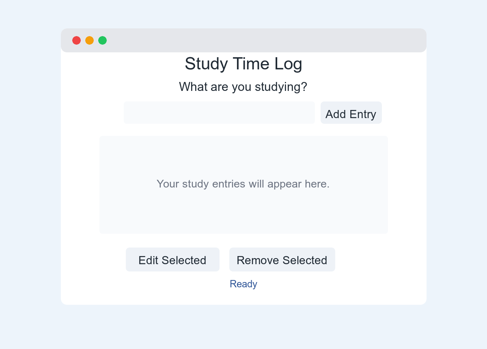
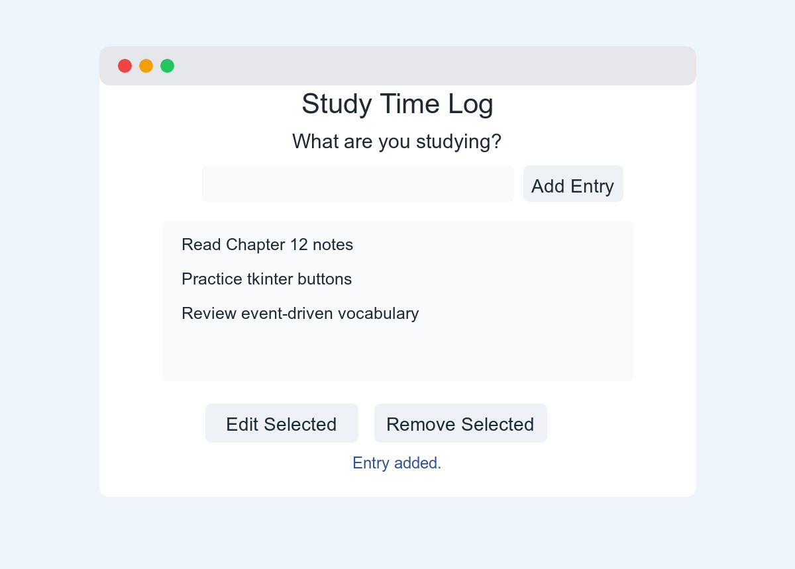
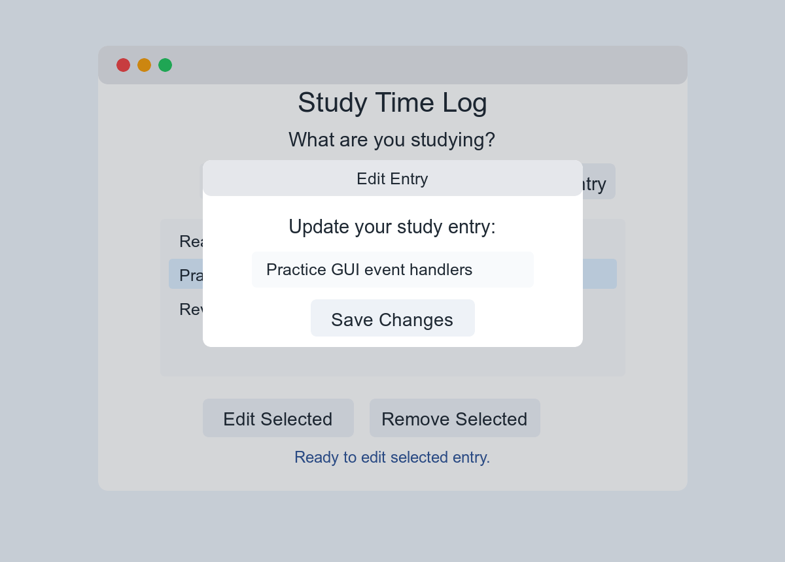
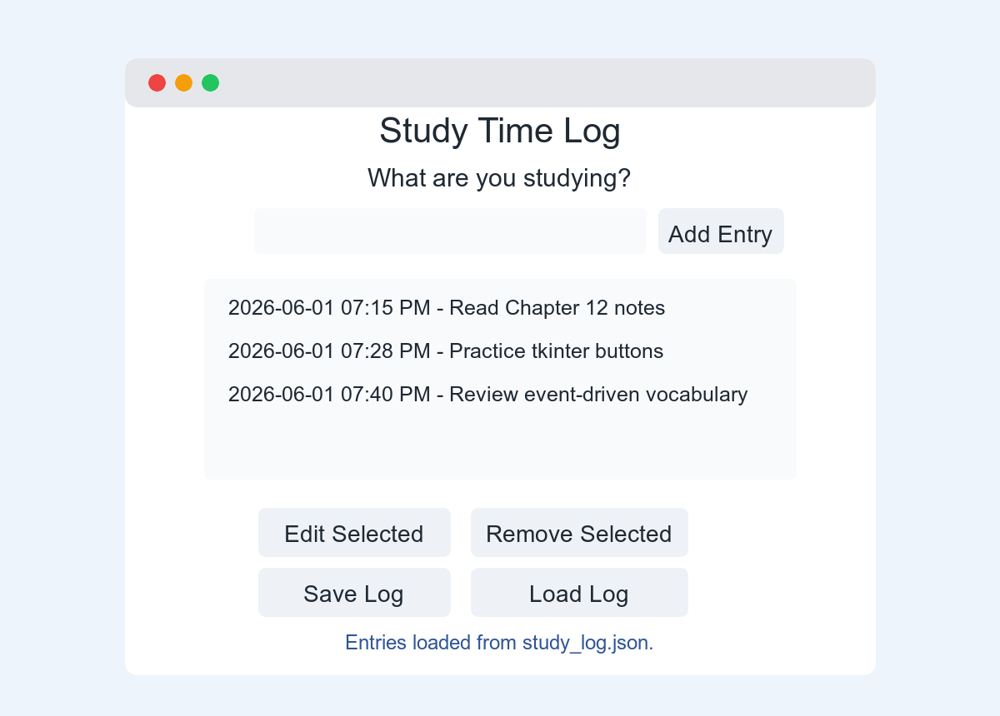

You will build a small graphical user interface, or GUI, with
Python and tkinter. The app will let you type what you
are studying, add it to a study log, edit an entry in a popup
window, and remove entries you no longer need.
Estimated time: 45 to 60 minutes
Goal: Practice event-driven programming by writing functions that respond when the user clicks buttons or selects items.
Your first version will keep entries only while the program is open. When you close the app, the entries disappear. After that, you will add a challenge feature that saves and loads entries with a JSON file.

| Chapter idea | Where you will see it |
|---|---|
| Event-driven programming |
Button clicks call functions such as add_entry,
remove_entry, and edit_entry.
|
| GUI components | The app uses a window, labels, an entry box, buttons, a listbox, and a popup window. |
| GUI design issues | The app uses larger text, clear labels, spacing, and feedback messages so it is easier to read. |
| Developing an event-driven app | You will build the app one feature at a time and test after each major change. |
Create a new folder for this activity. Then create and activate a virtual environment.
Mac or Linux:
mkdir study-time-log
cd study-time-log
python3 -m venv .venv
source .venv/bin/activate
python --versionWindows:
mkdir study-time-log
cd study-time-log
py -m venv .venv
.venv\Scripts\activate
python --versionCreate a new file named study_time_log.py.
Note: tkinter usually comes with
Python. If your computer says No module named tkinter
or No module named _tkinter, ask for help before
continuing. You may need a different Python installation.
In Part 1, the app can add, edit, and remove entries. The entries are stored in memory, which means they disappear when the program closes. That is normal for this first version.
Add this code to study_time_log.py:
import tkinter as tk
from tkinter import messagebox
root = tk.Tk()
root.title("Study Time Log")
root.geometry("720x520")
BIG_FONT = ("Arial", 18)
TITLE_FONT = ("Arial", 24, "bold")
root.mainloop()Run the program:
python3 study_time_log.pyYou should see a blank window. Close the window before you move to the next step.
Replace your file with this starter layout. This version creates the visible parts of the GUI.
import tkinter as tk
from tkinter import messagebox
root = tk.Tk()
root.title("Study Time Log")
root.geometry("720x520")
BIG_FONT = ("Arial", 18)
TITLE_FONT = ("Arial", 24, "bold")
title_label = tk.Label(root, text="Study Time Log", font=TITLE_FONT)
title_label.pack(pady=15)
instruction_label = tk.Label(root, text="What are you studying?", font=BIG_FONT)
instruction_label.pack()
entry_box = tk.Entry(root, font=BIG_FONT, width=35)
entry_box.pack(pady=10)
add_button = tk.Button(root, text="Add Entry", font=BIG_FONT)
add_button.pack(pady=5)
log_listbox = tk.Listbox(root, font=BIG_FONT, width=45, height=8)
log_listbox.pack(pady=15)
button_frame = tk.Frame(root)
button_frame.pack()
edit_button = tk.Button(button_frame, text="Edit Selected", font=BIG_FONT)
edit_button.grid(row=0, column=0, padx=8)
remove_button = tk.Button(button_frame, text="Remove Selected", font=BIG_FONT)
remove_button.grid(row=0, column=1, padx=8)
status_label = tk.Label(root, text="Ready", font=("Arial", 14))
status_label.pack(pady=15)
root.mainloop()Run the program again. You should now see the main layout.
Buttons do not do anything by themselves. In a GUI program, you write a function and connect the button to that function.
Add this function above the line that creates
title_label:
def add_entry():
study_text = entry_box.get().strip()
if study_text == "":
status_label.config(text="Type an entry first.")
return
log_listbox.insert(tk.END, study_text)
entry_box.delete(0, tk.END)
status_label.config(text="Entry added.")Then change your add_button line so it includes
command=add_entry:
add_button = tk.Button(root, text="Add Entry", font=BIG_FONT, command=add_entry)Run the program. Type something into the entry box and click Add Entry.

Add this function below add_entry:
def remove_entry():
selected = log_listbox.curselection()
if len(selected) == 0:
status_label.config(text="Select an entry to remove.")
return
log_listbox.delete(selected[0])
status_label.config(text="Entry removed.")Then update the remove button:
remove_button = tk.Button(button_frame, text="Remove Selected", font=BIG_FONT, command=remove_entry)Run the program. Add a few entries, select one, and click Remove Selected.
Editing needs a little more code because the user needs a place to type the new text. A popup window is a good fit for this feature.
Add this function below remove_entry:
def edit_entry():
selected = log_listbox.curselection()
if len(selected) == 0:
status_label.config(text="Select an entry to edit.")
return
selected_index = selected[0]
current_text = log_listbox.get(selected_index)
edit_window = tk.Toplevel(root)
edit_window.title("Edit Entry")
edit_window.geometry("560x220")
edit_label = tk.Label(edit_window, text="Update your study entry:", font=BIG_FONT)
edit_label.pack(pady=12)
edit_box = tk.Entry(edit_window, font=BIG_FONT, width=35)
edit_box.insert(0, current_text)
edit_box.pack(pady=8)
def save_edit():
new_text = edit_box.get().strip()
if new_text == "":
messagebox.showwarning("Missing text", "Please type an entry.")
return
log_listbox.delete(selected_index)
log_listbox.insert(selected_index, new_text)
status_label.config(text="Entry updated.")
edit_window.destroy()
save_button = tk.Button(edit_window, text="Save Changes", font=BIG_FONT, command=save_edit)
save_button.pack(pady=12)Then update the edit button:
edit_button = tk.Button(button_frame, text="Edit Selected", font=BIG_FONT, command=edit_entry)Run the program. Add an entry, select it, and click Edit Selected.

Now upgrade the app so it can save and load entries. You will also add a timestamp to each new entry.
Why JSON? A plain text file is fine when each entry is just one line. This challenge uses JSON because each entry will have two pieces of information: the study text and the time it was created. JSON lets Python save that structured data without making you split apart strings later.
At the top of your file, add these imports:
import json
from datetime import datetimeNear your font variables, add this file name:
DATA_FILE = "study_log.json"
entries = []In the final version, the listbox will show items from the
entries list. Each item will be a dictionary with a
text value and a created_at value.
Add these helper functions:
def format_entry(entry):
return f"{entry['created_at']} - {entry['text']}"
def refresh_listbox():
log_listbox.delete(0, tk.END)
for entry in entries:
log_listbox.insert(tk.END, format_entry(entry))Change your app so the functions work with the
entries list instead of only changing the listbox.
When you add an entry, append a dictionary:
new_entry = {
"text": study_text,
"created_at": datetime.now().strftime("%Y-%m-%d %I:%M %p")
}
entries.append(new_entry)
refresh_listbox()When you remove an entry, remove it from the list:
entries.pop(selected[0])
refresh_listbox()When you edit an entry, update the text value:
entries[selected_index]["text"] = new_text
refresh_listbox()Add these two functions:
def save_entries():
with open(DATA_FILE, "w", encoding="utf-8") as file:
json.dump(entries, file, indent=4)
status_label.config(text="Entries saved.")
def load_entries():
global entries
try:
with open(DATA_FILE, "r", encoding="utf-8") as file:
entries = json.load(file)
except FileNotFoundError:
entries = []
refresh_listbox()
status_label.config(text="Entries loaded.")Add two more buttons in the button_frame:
save_button = tk.Button(button_frame, text="Save Log", font=BIG_FONT, command=save_entries)
save_button.grid(row=1, column=0, padx=8, pady=8)
load_button = tk.Button(button_frame, text="Load Log", font=BIG_FONT, command=load_entries)
load_button.grid(row=1, column=1, padx=8, pady=8)Run the app. Add a few entries, click Save Log, close the app, reopen it, and click Load Log.

Answer these questions in your own words:
| Problem | What to check |
|---|---|
| The button appears, but nothing happens. |
Check the button’s command= option. Use the function
name without parentheses, such as command=add_entry.
|
| The program says a variable is not defined. | Check spelling and make sure the variable is created before the function uses it. |
| The edit window opens, but the list does not update. |
Make sure the save function changes the selected entry and then
calls refresh_listbox().
|
| The saved entries do not come back. |
Make sure you clicked Save Log before closing the
app, and make sure study_log.json is in the same folder
as your Python file.
|
import json
import tkinter as tk
from datetime import datetime
from tkinter import messagebox
DATA_FILE = "study_log.json"
entries = []
root = tk.Tk()
root.title("Study Time Log")
root.geometry("760x620")
BIG_FONT = ("Arial", 18)
TITLE_FONT = ("Arial", 24, "bold")
STATUS_FONT = ("Arial", 14)
def format_entry(entry):
return f"{entry['created_at']} - {entry['text']}"
def refresh_listbox():
log_listbox.delete(0, tk.END)
for entry in entries:
log_listbox.insert(tk.END, format_entry(entry))
def add_entry():
study_text = entry_box.get().strip()
if study_text == "":
status_label.config(text="Type an entry first.")
return
new_entry = {
"text": study_text,
"created_at": datetime.now().strftime("%Y-%m-%d %I:%M %p")
}
entries.append(new_entry)
refresh_listbox()
entry_box.delete(0, tk.END)
status_label.config(text="Entry added.")
def remove_entry():
selected = log_listbox.curselection()
if len(selected) == 0:
status_label.config(text="Select an entry to remove.")
return
entries.pop(selected[0])
refresh_listbox()
status_label.config(text="Entry removed.")
def edit_entry():
selected = log_listbox.curselection()
if len(selected) == 0:
status_label.config(text="Select an entry to edit.")
return
selected_index = selected[0]
current_text = entries[selected_index]["text"]
edit_window = tk.Toplevel(root)
edit_window.title("Edit Entry")
edit_window.geometry("560x220")
edit_label = tk.Label(edit_window, text="Update your study entry:", font=BIG_FONT)
edit_label.pack(pady=12)
edit_box = tk.Entry(edit_window, font=BIG_FONT, width=35)
edit_box.insert(0, current_text)
edit_box.pack(pady=8)
def save_edit():
new_text = edit_box.get().strip()
if new_text == "":
messagebox.showwarning("Missing text", "Please type an entry.")
return
entries[selected_index]["text"] = new_text
refresh_listbox()
status_label.config(text="Entry updated.")
edit_window.destroy()
save_button = tk.Button(edit_window, text="Save Changes", font=BIG_FONT, command=save_edit)
save_button.pack(pady=12)
def save_entries():
with open(DATA_FILE, "w", encoding="utf-8") as file:
json.dump(entries, file, indent=4)
status_label.config(text="Entries saved.")
def load_entries():
global entries
try:
with open(DATA_FILE, "r", encoding="utf-8") as file:
entries = json.load(file)
except FileNotFoundError:
entries = []
refresh_listbox()
status_label.config(text="Entries loaded.")
title_label = tk.Label(root, text="Study Time Log", font=TITLE_FONT)
title_label.pack(pady=15)
instruction_label = tk.Label(root, text="What are you studying?", font=BIG_FONT)
instruction_label.pack()
entry_box = tk.Entry(root, font=BIG_FONT, width=35)
entry_box.pack(pady=10)
add_button = tk.Button(root, text="Add Entry", font=BIG_FONT, command=add_entry)
add_button.pack(pady=5)
log_listbox = tk.Listbox(root, font=BIG_FONT, width=48, height=8)
log_listbox.pack(pady=15)
button_frame = tk.Frame(root)
button_frame.pack()
edit_button = tk.Button(button_frame, text="Edit Selected", font=BIG_FONT, command=edit_entry)
edit_button.grid(row=0, column=0, padx=8)
remove_button = tk.Button(button_frame, text="Remove Selected", font=BIG_FONT, command=remove_entry)
remove_button.grid(row=0, column=1, padx=8)
save_button = tk.Button(button_frame, text="Save Log", font=BIG_FONT, command=save_entries)
save_button.grid(row=1, column=0, padx=8, pady=8)
load_button = tk.Button(button_frame, text="Load Log", font=BIG_FONT, command=load_entries)
load_button.grid(row=1, column=1, padx=8, pady=8)
status_label = tk.Label(root, text="Ready", font=STATUS_FONT)
status_label.pack(pady=15)
root.mainloop()You have built a simple event-driven GUI application. The important idea is that the program waits for the user to do something, such as clicking a button, and then responds by running the connected function.
In a larger project, you could add more features such as categories, total study minutes, a search box, or automatic saving when the window closes.